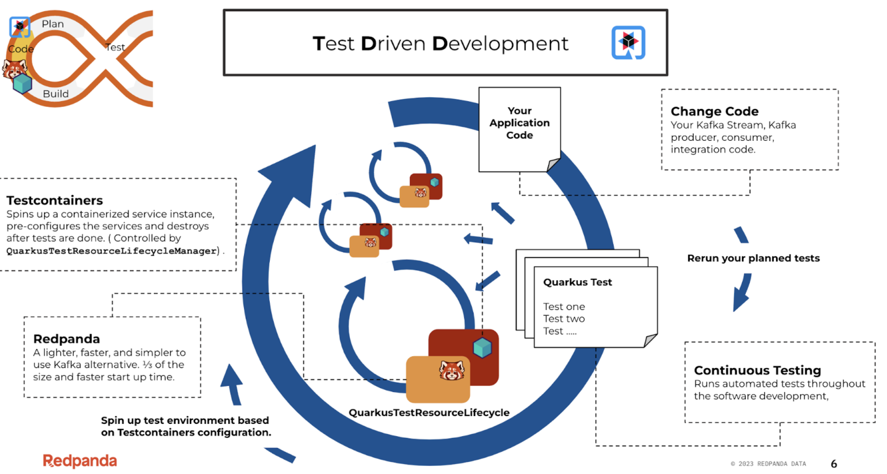

Igas arendusetapis testimine integreeritakse arendustsüklisse.
Kuna testid on kirjutatud enne koodi, on arendajal selge ülevaade. Kiire tagasiside ja nõuded on selgelt kirja pandud, seega tiimitöö peaks paremini sujuma.
Enne koodi arendamist testide kirjutamine võtab kauem aega. Keeruline uutele ja võib tekkida olukord, kus testitakse liiga palju, seega aja kulu suureneb.
PyTest (Python): Paindlik ja kasutajasõbralik raamistik Pythonis testide kirjutamiseks.
